import numpy as np
import pandas as pd
import statsmodels.api as sm
import matplotlib.pyplot as plt
from matplotlib import rc
import seaborn as sns
import statsmodels.formula.api as smf
import matplotlib.animation as animation
from ipywidgets import interact, IntSlider, FloatLogSlider # widget manipulation
%matplotlib inline
from IPython.display import HTML
from scipy.stats import t HLMA 408: Modèle linéaire
Auteur: Joseph Salmon joseph.salmon@umontpellier.fr
Plot initialization
# saving tools for the course
params = {'axes.labelsize': 12,
'font.size': 12,
'legend.fontsize': 12,
'xtick.labelsize': 10,
'ytick.labelsize': 10,
'text.usetex': True, # possibly set False if no Latex install on your machine
'figure.figsize': (10, 7),
'font.family' : 'sans-serif'}
plt.rcParams.update(params)
sns.set_context("poster")
sns.set_palette("colorblind")
sns.axes_style()
sns.set_style({'legend.frameon': True})
color_blind_list = sns.color_palette("colorblind", 8)
my_orange = color_blind_list[2]
my_green = color_blind_list[1]
my_blue = color_blind_list[0]
dirname = "../prebuiltimages/"
imageformat = ".pdf"from download import download # si download n'est pas installé décommenter + exécuter la ligne du dessus
saving = True
path_target = "./utils.py"
url_shared_files = "http://josephsalmon.eu/enseignement/Montpellier/HLMA408/sharedcode/utils.py"
download(url_shared_files, path_target, replace=False)
from utils import my_saving_displayReplace is False and data exists, so doing nothing. Use replace=True to re-download the data.Load data
# Original url:
url = 'https://forge.scilab.org/index.php/p/rdataset/source/file/master/csv/datasets/cars.csv'
# Alternative url:
# url = 'http://josephsalmon.eu/enseignement/TELECOM/MDI720/datasets/cars.csv'
df_cars = pd.read_csv(url, dtype=np.float64)
df_cars = df_cars.drop(columns='Unnamed: 0')
n_sample = df_cars.size
df_cars.columns = ['Vitesse', 'Distance']
df_cars.columnsIndex(['Vitesse', 'Distance'], dtype='object')Plot data only
xlabels = 'Vitesse (mph)'
ylabels = 'Distance (ft)'
fig1 = plt.figure(figsize=(10, 7))
plt.xlabel(xlabels)
plt.ylabel(ylabels)
plt.title(r'Donn\'ees')
plt.plot(df_cars['Vitesse'], df_cars['Distance'], 'o',
label=r'Donn\'ees', markeredgecolor='k', markeredgewidth=1)
axes = plt.gca()
xmin_normal = 0
xmax_normal = 30
ymin_normal = -30
ymax_normal = 140
plt.xlim(left=xmin_normal, right=xmax_normal)
plt.ylim(bottom=ymin_normal, top=ymax_normal)
plt.legend(numpoints=1, loc=2) # numpoints = 1 for nicer display
plt.tight_layout()
plt.show()
my_saving_display(fig1, dirname, "cars_data_plot", imageformat, saving=saving)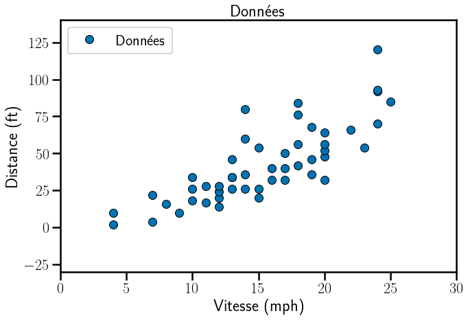
stastsmodel
C’est le package qui permet d’utiliser les fonctions classiques des moindres carrés (moindres carrés ordinaires, mais aussi ANOVA, etc.):
http://www.statsmodels.org/
Plot data and OLS estimator
# Fit regression model (with statsmodels)
results = smf.ols('Distance ~ Vitesse', data=df_cars).fit()
# create axis value to evaluate the model
X_to_predict = np.linspace(0.0, 30.0, num=50).reshape(50, 1)
X_to_predict = pd.DataFrame(X_to_predict, columns=['Vitesse'])# Plot data + regression model
fig = plt.figure(figsize=(10, 7))
plt.xlabel(xlabels)
plt.ylabel(ylabels)
plt.plot(df_cars['Vitesse'], df_cars['Distance'], 'o',
label=r'Donn\'ees', markeredgecolor='k', markeredgewidth=1)
plt.xlim(left=xmin_normal, right=xmax_normal)
plt.ylim(bottom=ymin_normal, top=ymax_normal)
plt.plot(X_to_predict, results.predict(X_to_predict),
linewidth=3, color=my_orange, label=r"Moindres carr\'es")
plt.legend(numpoints=1, loc=2) # numpoints = 1 for nicer display
plt.title(r"Donn\'ees et droite des moindres carr\'es")
plt.tight_layout()
plt.show()
my_saving_display(fig, dirname, "cars_data_plot_regression",
imageformat, saving=saving)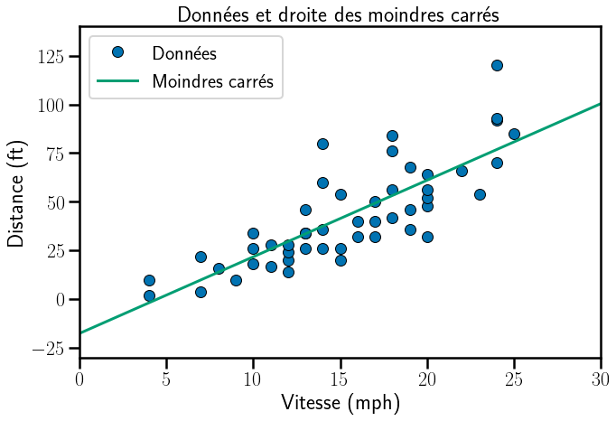
# Plot data + regression model + prediction on observed x_i
fig = plt.figure(figsize=(10, 7))
plt.xlabel(xlabels)
plt.ylabel(ylabels)
plt.plot(df_cars['Vitesse'], df_cars['Distance'], 'o',
label=r'Donn\'ees', markeredgecolor='k', markeredgewidth=1)
plt.xlim(left=xmin_normal, right=xmax_normal)
plt.ylim(bottom=ymin_normal, top=ymax_normal)
plt.plot(X_to_predict, results.predict(X_to_predict),
linewidth=3, color=my_orange, label=r"Moindres carr\'es")
plt.plot(df_cars['Vitesse'], results.predict(df_cars['Vitesse']), 'o', label=r"Pr\'edictions",
color='r', markeredgewidth=1)
plt.legend(numpoints=1, loc=2) # numpoints = 1 for nicer display
plt.title(r"Donn\'ees, droite des moindres carr\'es et pr\'edictions")
plt.tight_layout()
plt.show()
my_saving_display(fig, dirname, "cars_data_plot_regression_with_pred",
imageformat, saving=saving)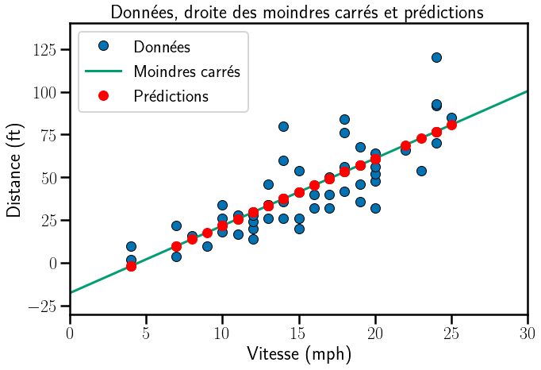
Residuals
residual_pandas = pd.DataFrame(results.resid)
residual_manuel = pd.DataFrame(data=df_cars['Distance']- results.predict(df_cars['Vitesse']))
df_residuals = pd.concat([residual_pandas, residual_manuel], axis=1)
df_residuals.columns=['residual_pandas','residual_manuel']fig = plt.figure(figsize=(10, 7))
plt.xlim(left=0, right=30)
plt.ylim(bottom=-50, top=50)
plt.xlabel(xlabels)
plt.ylabel(ylabels)
legend_names = [r'positif', r'n\'egatif']
plots = []
proxies = []
# Positive residuals
positive_res = residual_pandas.values > 0
markerline, stemlines, baseline = plt.stem(df_cars[positive_res][['Vitesse']].values,
residual_pandas[positive_res].values)
plots.append((markerline, stemlines, baseline))
plt.setp(stemlines, linewidth=2, color=my_green) # set stems colors
plt.setp(markerline, 'markerfacecolor', my_green, markeredgecolor='k',
markeredgewidth=1) # make points green
h, = plt.plot(1, 1, color=my_green)
proxies.append(h)
plt.legend(proxies, legend_names, numpoints=1, loc=2)
# Negative residuals
negative_res = residual_pandas.values <= 0
markerline, stemlines, baseline = plt.stem(df_cars[negative_res][['Vitesse']].values,
residual_pandas[negative_res].values)
plots.append((markerline, stemlines, baseline))
plt.setp(stemlines, linewidth=2, color=my_orange) # set stems colors
plt.setp(markerline, 'markerfacecolor', my_orange, markeredgecolor='k',
markeredgewidth=1) # make points orange
plt.title(r'R\'esidus')
plt.axhline(y=0, ls='-', color='k')
h, = plt.plot(1, 1, color=my_orange)
proxies.append(h)
plt.legend(proxies, legend_names, numpoints=1, loc=2)
plt.tight_layout()
plt.show()
my_saving_display(fig, dirname, "cars_data_plot_regression_residual",
imageformat, saving=saving)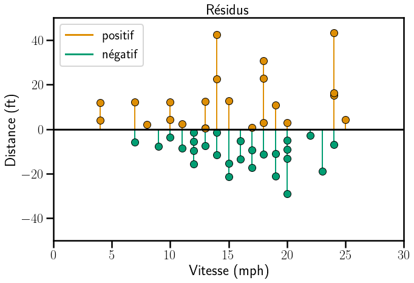
residual_pandas[positive_res].shape
# (df_cars[positive_res][['Vitesse']]).dtypes
# residual_pandas[positive_res]
# plt.stem(df_cars[positive_res][['Vitesse']], residual_pandas[positive_res])
# df_cars[positive_res][['Vitesse']](23, 1)print(results.params)
sigmahat=np.sqrt(np.sum(residual_pandas.values ** 2)/ (n_sample - 2))
print("sigmahat={}".format(sigmahat))Intercept -17.579095
Vitesse 3.932409
dtype: float64
sigmahat=10.763468568422413Intervalle de confiance pour la prediction
alpha = 0.05
n_samples, _ = df_cars.shape
t_alpha = t.ppf(1 - alpha / 2, n_samples - 2)
sigmahat = np.sqrt(np.sum(results.resid ** 2) / (n_samples - 2))
meanX = (np.array(df_cars['Vitesse'].mean(axis=0), dtype=pd.Series))
# WARNING DDOF : TOUJOURS vérifier la normalisation pour les variances!
varX = (np.array(df_cars['Vitesse'].var(axis=0, ddof=0), dtype=pd.Series))
sigmapred_hat = (sigmahat**2 * (varX +
(X_to_predict['Vitesse'].values - meanX)**2) / (varX * n_samples)) ** 0.5
IC_down = results.predict(X_to_predict['Vitesse']) - t_alpha * sigmapred_hat
IC_up = results.predict(X_to_predict['Vitesse']) + t_alpha * sigmapred_hatATTENTION aux normalisations pour les variances et les écarts-types!!!
Quand on calcule des variances avec pandas le paramètre par défaut est ddof = 1 alors que l’on a ddof=0 par défaut dans numpy. Pour éviter toute erreur il convient donc de toujours renseigner l’option ddof explicitement!
fig = plt.figure(figsize=(10, 7))
plt.xlabel(xlabels)
plt.ylabel(ylabels)
plt.plot(X_to_predict, IC_down,'--',color='k', linewidth=1,
label="IC($1-\\alpha$), $\\alpha={}$".format(alpha))
plt.plot(X_to_predict, IC_up,'--',color='k', linewidth=1, label='')
plt.plot(df_cars['Vitesse'], df_cars['Distance'], 'o',
label=r'Donn\'ees', markeredgecolor='k', markeredgewidth=1)
plt.xlim(left=xmin_normal, right=xmax_normal)
plt.ylim(bottom=ymin_normal, top=ymax_normal)
plt.plot(X_to_predict, results.predict(X_to_predict),
linewidth=3, color=my_orange, label=r"Moindres carr\'es")
ax = plt.gca()
ax.fill_between(X_to_predict.squeeze(),
IC_up.astype(float),
IC_down.astype(float), facecolor='blue', alpha=.2)
plt.legend(numpoints=1, loc=2) # numpoints = 1 for nicer legend
plt.title(r'Donn\'ees, pr\'ediction et intervalle de confiance')
plt.tight_layout()
plt.show()
my_saving_display(fig, dirname, "cars_IC_plot_regression",
imageformat, saving=saving)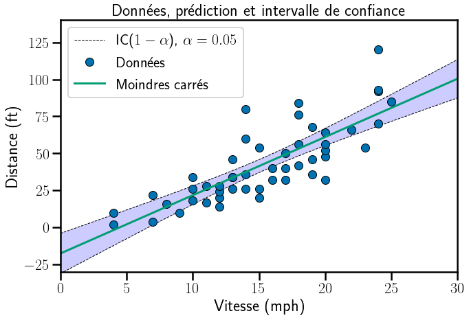
Version avec statsmodels
results = smf.ols('Distance ~ Vitesse', data=df_cars).fit()
predictions = results.get_prediction(X_to_predict)
df_predictions = predictions.summary_frame(alpha=alpha)
IC_down_sm = df_predictions['mean_ci_lower'].astype(float)
IC_up_sm = df_predictions['mean_ci_upper'].astype(float)fig = plt.figure(figsize=(10, 7))
plt.xlabel(xlabels)
plt.ylabel(ylabels)
plt.xlim(left=xmin_normal, right=xmax_normal)
plt.ylim(bottom=ymin_normal, top=ymax_normal)
# Computing prediction interval using statmodels:
plt.plot(X_to_predict, IC_down_sm, '--', color='k', linewidth=1,
label="IC($1-\\alpha$), $\\alpha={}$".format(alpha))
plt.plot(X_to_predict, IC_up_sm, '--', color='k', linewidth=1, label='')
plt.plot(df_cars['Vitesse'], df_cars['Distance'], 'o',
label=r'Donn\'ees', markeredgecolor='k', markeredgewidth=1)
plt.plot(X_to_predict['Vitesse'], results.predict(X_to_predict['Vitesse']),
linewidth=3, color=my_orange, label=r"Moindres carr\'es")
# Calcul des ICs en prédiction avec statmodels:
ax = plt.gca()
ax.fill_between(X_to_predict.squeeze(),
IC_up_sm,
IC_down_sm, facecolor='blue', alpha=.2)
# numpoints = 1 nécessaire pour les légendes avec les vieilles version de matplotlib
plt.legend(numpoints=1, loc=2)
plt.title(r'Donn\'ees, pr\'ediction et intervalle de confiance')
plt.tight_layout()
plt.show()Intervalle de confiance sur \beta_0^\star et \beta_1^\star
df_IC = results.conf_int(alpha=alpha)
print("IC ordonnée à l'origine: {}".format(df_IC.loc["Intercept", : ].values))
print("IC variable vitesse: {}".format(df_IC.loc["Vitesse", : ].values))IC ordonnée à l'origine: [-31.16784958 -3.9903402 ]
IC variable vitesse: [3.09696433 4.76785319]Véifications des formules du cours pour les ICs pour \beta_0^\star et \beta_1^\star
n_samples, _ = df_cars.shape
t_alpha = t.ppf(1 - alpha / 2, n_samples - 2)
sigmahat = np.sqrt(np.sum(results.resid ** 2) / (n_samples - 2))
sigmapred_hat_0 = (sigmahat**2 * (varX + (0 - meanX)**2) / (varX * n_samples)) ** 0.5
sigmapred_hat_1 = (sigmahat**2 * 1 / (varX * n_samples)) ** 0.5
print(sigmapred_hat_0, sigmapred_hat_1)6.758440169379237 0.41551277665712233beta_0 = results.params.loc['Intercept']
beta_1 = results.params.loc['Vitesse']
print(beta_0, beta_1)-17.579094890510955 3.9324087591240877print("IC variable ordonneé à l'origine: {}".format(
[beta_0 - t_alpha * sigmapred_hat_0, beta_0 + t_alpha * sigmapred_hat_0]))
print("IC variable vitesse: {}".format(
[beta_1 - t_alpha * sigmapred_hat_1, beta_1 + t_alpha * sigmapred_hat_1]))IC variable ordonneé à l'origine: [-31.16784958260138, -3.9903401984205296]
IC variable vitesse: [3.0969643293568554, 4.76785318889132]ICs en prédictions
X_5_15 = np.array([5, 15]).reshape(2, 1)
X_5_15 = pd.DataFrame(X_5_15, columns=['Vitesse'])predictions = results.get_prediction(X_5_15)
df_predictions = predictions.summary_frame(alpha=alpha)
IC_down_5_15 = df_predictions['mean_ci_lower'].astype(float)
IC_up_5_15 = df_predictions['mean_ci_upper'].astype(float)
print(IC_down_5_15)
print(IC_up_5_15)
print("IC en prédiction pour v=5: [{}, {}]".format(
IC_down_5_15.iloc[0], IC_up_5_15.iloc[0]))
print("IC en prédiction pour v=15: [{}, {}]".format(
IC_down_5_15.iloc[1], IC_up_5_15.iloc[1]))0 -7.644150
1 37.021152
Name: mean_ci_lower, dtype: float64
0 11.810048
1 45.792921
Name: mean_ci_upper, dtype: float64
IC en prédiction pour v=5: [-7.644150359175656, 11.810048169394621]
IC en prédiction pour v=15: [37.02115215992353, 45.792920832777185]Histogramme des résidus
fig = plt.figure(figsize=(10, 7))
plt.hist(residual_pandas.values, bins=10, density=True, align='mid')
sns.kdeplot(residual_pandas.squeeze(), color='k')
plt.title(r'Histogramme et estimation de la densit\'e des r\'esidus ')
ax = plt.gca()
ax.legend_ = None
plt.xlabel(r'R\'esidus')
plt.ylabel(r'Fr\'equence')
plt.tight_layout()
plt.show()
my_saving_display(fig, dirname, "cars_residual_hist",
imageformat, saving=saving)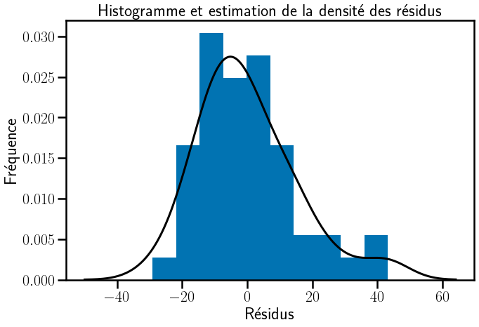
OLS sans ordonnée à l’origine
# Enlever l'ordonnée à l'origine (mettre l'ordonnée à zéro)
results_no_inter = smf.ols('Distance ~ Vitesse -1', data=df_cars).fit()
fig = plt.figure(figsize=(10, 7))
plt.plot(df_cars['Vitesse'], df_cars['Distance'], 'o',
label=r'Donn\'ees', markeredgecolor='k', markeredgewidth=1)
plt.plot(X_to_predict, results_no_inter.predict(X_to_predict),
linewidth=3, color=my_orange, label=r"Moindres carr\'es")
plt.xlim(left=xmin_normal, right=xmax_normal)
plt.ylim(bottom=ymin_normal, top=ymax_normal)
plt.legend(numpoints=1, loc=2) # numpoints = 1 for nicer legend
plt.tight_layout()
plt.show()
my_saving_display(
fig, dirname, "cars_data_plot_regression_statsmodel", imageformat, saving=saving)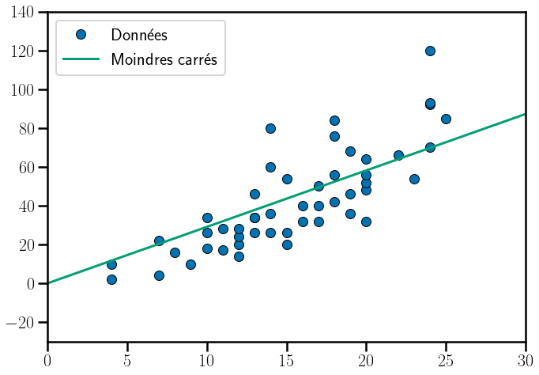
Second order with intercept = FALSE: physics tell you it is zero !
df_cars['V2'] = df_cars['Vitesse'] ** 2
results_no_inter = smf.ols('Distance ~ Vitesse + V2 -1', data=df_cars).fit()
X_to_predict['V2'] = X_to_predict['Vitesse']**2fig = plt.figure(figsize=(10, 7))
plt.plot(df_cars['Vitesse'], df_cars['Distance'], 'o',
label=r'Donn\'ees', markeredgecolor='k', markeredgewidth=1)
plt.plot(X_to_predict['Vitesse'], results_no_inter.predict(X_to_predict),
linewidth=3, color=my_orange, label=r"Moindres carr\'es")
plt.xlabel(xlabels),
plt.ylabel(ylabels)
plt.xlim(left=xmin_normal, right=xmax_normal)
plt.ylim(bottom=ymin_normal, top=ymax_normal)
plt.title(r'Donn\'ees et pr\'ediction quadratique')
plt.tight_layout()
plt.show()
my_saving_display(fig, dirname, "cars_data_plot_quad",
imageformat, saving=saving)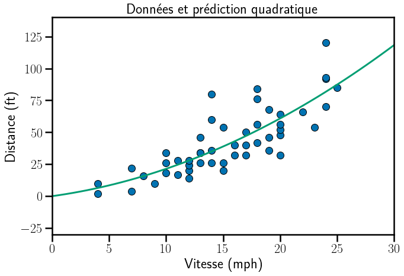
# With intercept and center of mass displayed
fig = plt.figure(figsize=(10, 7))
plt.xlim(left=xmin_normal, right=xmax_normal)
plt.ylim(bottom=ymin_normal, top=ymax_normal)
plt.plot(df_cars['Vitesse'], df_cars['Distance'], 'o',
label=r'Donn\'ees', markeredgecolor='k', markeredgewidth=1)
plt.plot(X_to_predict['Vitesse'], results.predict(X_to_predict['Vitesse']),
linewidth=3, color=my_orange, label=r"Moindres carr\'es")
plt.plot(df_cars['Vitesse'].mean(), df_cars['Distance'].mean(), 'or', markeredgewidth=10,
markeredgecolor=my_orange)
plt.plot([df_cars['Vitesse'].mean(), df_cars['Vitesse'].mean()], [-30, df_cars['Distance'].mean()],
color=my_orange, linewidth=1.5, linestyle="--")
plt.plot([0, df_cars['Vitesse'].mean()], [df_cars['Distance'].mean(), df_cars['Distance'].mean()], color=my_orange,
linewidth=1.5, linestyle="--")
plt.legend(numpoints=1, loc=2)
plt.xlabel(xlabels), plt.ylabel(ylabels)
plt.title(r'Donn\'ees, pr\'ediction et centre de masse')
plt.tight_layout()
plt.show()
my_saving_display(fig, dirname,
"cars_data_plot_regression_intercept_gravity", imageformat, saving=saving)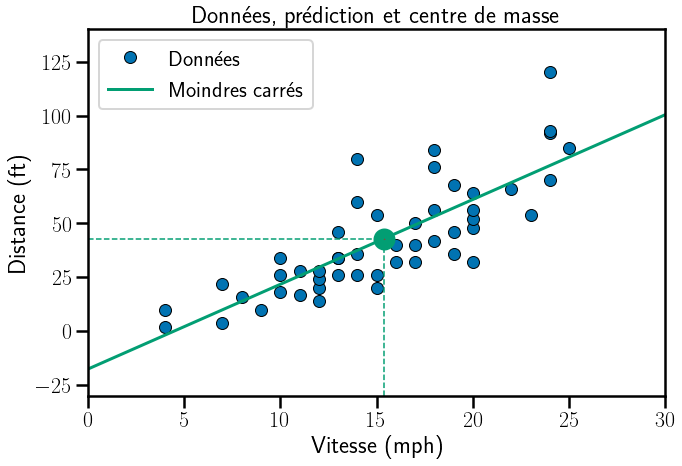
Cas de deux variables
# 3D case drawing
from mpl_toolkits.mplot3d import Axes3D
plt.close("all")
# Load data
url = 'http://vincentarelbundock.github.io/Rdatasets/csv/datasets/trees.csv'
dat3 = pd.read_csv(url)
X = dat3[['Girth', 'Height']].assign(Const=1)
y = dat3['Volume']
results = sm.OLS(y, X).fit().params
XX = np.arange(8, 22, 0.5)
YY = np.arange(64, 90, 0.5)
xx, yy = np.meshgrid(XX, YY)
zz = results['Const'] + results['Girth'] * xx + results['Height'] * yy
fig = plt.figure()
ax = Axes3D(fig)
ax.set_xlim(8, 22)
ax.set_ylim(60, 90)
ax.set_zlim(5, 80)
ax.xaxis.labelpad = 20
ax.yaxis.labelpad = 20
ax.zaxis.labelpad = 20
ax.set_xlabel(r"Circonférence")
ax.set_ylabel(r'\ Hauteur', linespacing=5.2)
ax.set_zlabel(r'Volume', linespacing=5.2)
ax.plot(X['Girth'], X['Height'], y, 'o')
plt.show()
my_saving_display(fig, dirname, "tree_data", imageformat)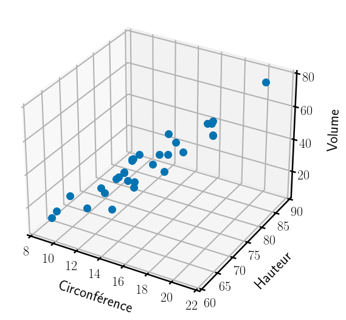
With intercept and center of mass + recentering + rescaling
fig = plt.figure()
ax = Axes3D(fig)
ax.set_xlim(8, 22)
ax.set_ylim(60, 90)
ax.set_zlim(5, 80)
ax.plot(X['Girth'], X['Height'], y, 'o')
ax.plot_wireframe(xx, yy, zz, rstride=10, cstride=10, alpha=0.3)
ax.plot_surface(xx, yy, zz, alpha=0.3)
ax.set_xlabel(r'Circonférence')
ax.set_ylabel('Hauteur')
ax.set_zlabel('Volume')
ax.xaxis.labelpad = 20
ax.yaxis.labelpad = 20
ax.zaxis.labelpad = 20
my_saving_display(fig, dirname, "tree_data_plot_regression", imageformat)
plt.show()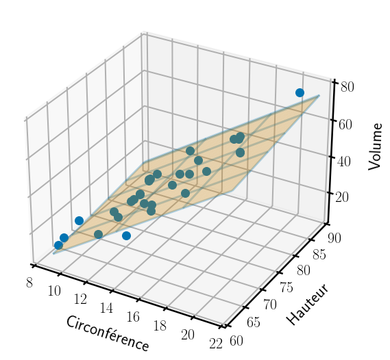
EXERCICE : dispersion et moindres carrés.
On montrera sur des exemples visuels simples l’impact de la dispersion en x sur l’incertitude du modèle, et le précepte: il vaut mieux disperser les mesures quand on peut pour réduire l’incertitude.
Cf. polycopié J. Pages page 120 pour voir la sensibilité des solutions
# sous échantillon étiré: bonne prédiction
df_etire = df_cars.iloc[[0, 1, 47, 48, 49]]
# sous échantillon concentré: mauvaise prédiction
df_concentre = df_cars.iloc[[10, 22, 23, 24, 25, 26, 40]]# IC pour cas etire
results_etire = smf.ols('Distance ~ Vitesse', data=df_etire).fit()
predictions = results_etire.get_prediction(X_to_predict)
predictions.summary_frame(alpha=0.05)
df_predictions = predictions.summary_frame(alpha=alpha)
IC_down_etire = df_predictions['mean_ci_lower'].astype(float)
IC_up_etire = df_predictions['mean_ci_upper'].astype(float)
# IC pour cas etire
results_concentre = smf.ols('Distance ~ Vitesse', data=df_concentre).fit()
predictions = results_concentre.get_prediction(X_to_predict)
predictions.summary_frame(alpha=0.05)
df_predictions = predictions.summary_frame(alpha=alpha)
IC_down_concentre = df_predictions['mean_ci_lower'].astype(float)
IC_up_concentre = df_predictions['mean_ci_upper'].astype(float)fig, (ax1, ax2) = plt.subplots(1, 2, figsize=(13, 7))
fig.suptitle(r'Donn\'ees, pr\'ediction et intervalle de confiance')
ax1.set_xlabel(xlabels)
ax1.set_ylabel(ylabels)
ax1.plot(X_to_predict['Vitesse'], IC_down_etire, '--', color='k', linewidth=1,
label="IC($1-\\alpha$), $\\alpha={}$".format(alpha))
ax1.plot(X_to_predict['Vitesse'], IC_up_etire,
'--', color='k', linewidth=1, label='')
ax1.plot(df_etire['Vitesse'], df_etire['Distance'], 'o',
label=r"Donn\'ees", markeredgecolor='k', markeredgewidth=1)
ax1.plot(X_to_predict['Vitesse'], results_etire.predict(X_to_predict['Vitesse']), linewidth=3,
color=my_orange,
label=r"Moindres carr\'es")
ax1.fill_between(X_to_predict['Vitesse'],
IC_up_etire.astype(float),
IC_down_etire.astype(float), facecolor='blue', alpha=.2)
ax1.set_xlim(left=xmin_normal, right=xmax_normal)
ax1.set_ylim(bottom=ymin_normal, top=ymax_normal)
ax1.legend(numpoints=1, loc=4, fontsize=15) # numpoints = 1 for nicer legend
ax2.set_xlabel(xlabels)
ax2.plot(X_to_predict['Vitesse'], IC_down_concentre, '--', color='k', linewidth=1,
label="IC($1-\\alpha$), $\\alpha={}$".format(alpha))
ax2.plot(X_to_predict['Vitesse'], IC_up_concentre,
'--', color='k', linewidth=1, label='')
ax2.plot(df_concentre['Vitesse'], df_concentre['Distance'], 'o',
label=r"Donn\'ees", markeredgecolor='k', markeredgewidth=1)
ax2.plot(X_to_predict['Vitesse'], results_concentre.predict(X_to_predict['Vitesse']), linewidth=3,
color=my_orange,
label=r"Moindres carr\'es")
ax2.fill_between(X_to_predict['Vitesse'],
IC_up_concentre.astype(float),
IC_down_concentre.astype(float), facecolor='blue', alpha=.2)
ax2.set_xlim(left=xmin_normal, right=xmax_normal)
ax2.set_ylim(bottom=ymin_normal, top=ymax_normal)
plt.show()
my_saving_display(fig, dirname, "cars_IC_plot_regression_etire_concentre",
imageformat, saving=saving)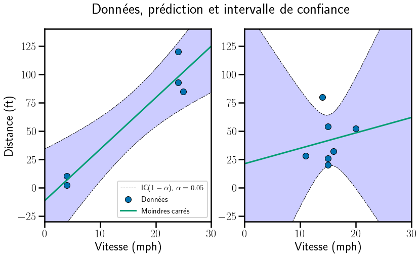
EXERCICE : intervalle de confiance sur données simulées.
# Random samples:
n_samples = 100
X = 50 * np.random.rand(n_samples, 1)
beta_0 = 3
beta_1 = 2
sigma = 8
y = X * beta_1 + beta_0 + sigma * np.random.randn(n_samples, 1)
df_simulated = pd.concat([pd.DataFrame(X), pd.DataFrame(y)], axis=1)
df_simulated.columns = ['X', 'y']fig1 = plt.figure(figsize=(10, 7))
plt.title(r'Donn\'ees')
plt.plot(df_simulated['X'], df_simulated['y'], 'o',
label=r'Donn\'ees simulées', markeredgecolor='k', markeredgewidth=1)
axes = plt.gca()
xmin_normal = 0
xmax_normal = 50
ymin_normal = -30
ymax_normal = 140
plt.xlim(left=xmin_normal, right=xmax_normal)
plt.ylim(bottom=ymin_normal, top=ymax_normal)
plt.legend(numpoints=1, loc=2) # numpoints = 1 for nicer display
plt.tight_layout()
plt.show()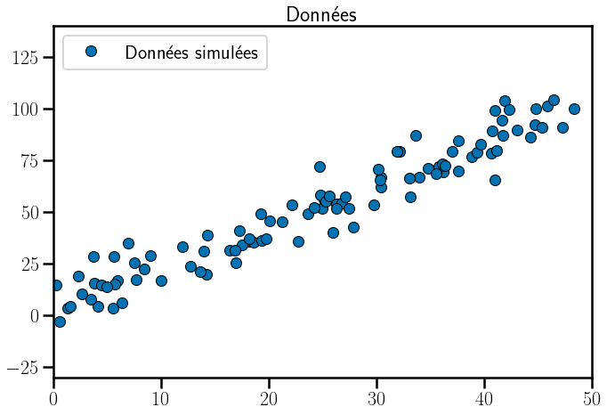
# Fit regression model (with statsmodels)
results = smf.ols('y ~ X', data=df_simulated).fit()
X_to_predict = pd.DataFrame(np.linspace(0.0, 50.0, num=50).reshape(50, 1))
X_to_predict.columns = ['X']
fig = plt.figure(figsize=(10, 7))
plt.plot(df_simulated['X'], df_simulated['y'], 'o',
label=r"Donn\'ees", markeredgecolor='k', markeredgewidth=1)
plt.xlim(left=xmin_normal, right=xmax_normal)
plt.ylim(bottom=ymin_normal, top=ymax_normal)
plt.plot(X_to_predict, results.predict(X_to_predict),
linewidth=3, color=my_orange, label=r"Moindres carr\'es")
plt.legend(numpoints=1, loc=2) # numpoints = 1 for nicer display
plt.xlabel(xlabels), plt.ylabel(ylabels)
plt.title(r"Donn\'ees et droite des moindres carr\'es")
plt.tight_layout()
plt.show()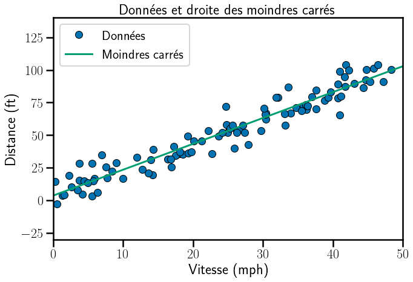
fig = plt.figure(figsize=(10, 7))
plt.xlabel(xlabels)
plt.ylabel(ylabels)
alpha = 0.05
predictions = results.get_prediction(X_to_predict)
df_predictions = predictions.summary_frame(alpha=alpha)
IC_down = df_predictions['mean_ci_lower'].astype(float)
IC_up = df_predictions['mean_ci_upper'].astype(float)
plt.plot(X_to_predict, IC_down, '--', color='k', linewidth=1,
label="IC($1-\\alpha$), $\\alpha={}$".format(alpha))
plt.plot(X_to_predict, IC_up, '--', color='k', linewidth=1, label='')
plt.plot(df_simulated['X'], df_simulated['y'], 'o',
label=r"Donn\'ees", markeredgecolor='k', markeredgewidth=1)
plt.xlim(left=xmin_normal, right=xmax_normal)
plt.ylim(bottom=ymin_normal, top=ymax_normal)
plt.plot(X_to_predict, results.predict(X_to_predict),
linewidth=3, color=my_orange, label=r"Moindres carr\'es")
ax = plt.gca()
ax.fill_between(X_to_predict.squeeze(),
IC_up.astype(float),
IC_down.astype(float), facecolor='blue', alpha=.2)
plt.xlim(left=xmin_normal, right=xmax_normal)
plt.ylim(bottom=ymin_normal, top=ymax_normal)
plt.legend(numpoints=1, loc=2) # numpoints = 1 for nicer legend
plt.title(r'Donn\'ees, pr\'ediction et intervalle de confiance')
plt.tight_layout()
plt.show()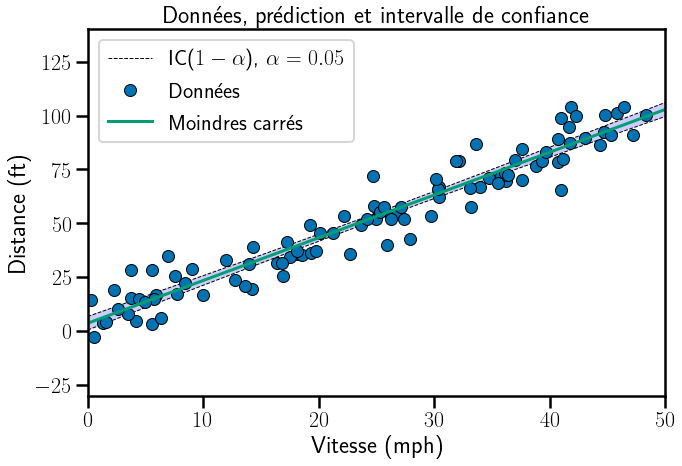
# Random samples:
def simulated_IC(n_samples=100, beta_0=3, beta_1=2, sigma=15, alpha=0.05):
np.random.seed(44)
X_to_predict = pd.DataFrame(np.linspace(0.0, 50.0, num=50).reshape(50, 1))
X_to_predict.columns = ['X']
X = 50 * np.random.rand(n_samples, 1)
y = X * beta_1 + beta_0 + sigma * np.random.randn(n_samples, 1)
df_simulated = pd.concat([pd.DataFrame(X), pd.DataFrame(y)], axis=1)
df_simulated.columns = ['X', 'y']
fig = plt.figure(figsize=(10, 7))
plt.xlabel(xlabels)
plt.ylabel(ylabels)
results = smf.ols('y ~ X', data=df_simulated).fit()
predictions = results.get_prediction(X_to_predict)
df_predictions = predictions.summary_frame(alpha=alpha)
IC_down = df_predictions['mean_ci_lower'].astype(float)
IC_up = df_predictions['mean_ci_upper'].astype(float)
plt.plot(X_to_predict, IC_down, '--', color='k', linewidth=1,
label="IC($1-\\alpha$), $\\alpha={}$".format(alpha))
plt.plot(X_to_predict, IC_up, '--', color='k', linewidth=1, label='')
plt.plot(df_simulated['X'], df_simulated['y'], 'o',
label=r"Donn\'ees", markeredgecolor='k', markeredgewidth=1)
plt.xlim(left=xmin_normal, right=xmax_normal)
plt.ylim(bottom=ymin_normal, top=ymax_normal)
plt.plot(X_to_predict, results.predict(X_to_predict),
linewidth=3, color=my_orange, label=r"Moindres carr\'es")
ax = plt.gca()
ax.fill_between(X_to_predict.squeeze(),
IC_up.astype(float),
IC_down.astype(float), facecolor='blue', alpha=.2)
plt.xlim(left=xmin_normal, right=xmax_normal)
plt.ylim(bottom=ymin_normal, top=ymax_normal)
plt.legend(numpoints=1, loc=2) # numpoints = 1 for nicer legend
plt.title(r'Donn\'ees, pr\'ediction et intervalle de confiance')
plt.tight_layout()
plt.show()interact(simulated_IC,
n_samples=IntSlider(min=5, max=200, step=5, value=100),
beta_0=(0.1, 5, 0.1),
beta_1=(0.1, 5, 0.1),
sigma=(0.5, 20, 0.5),
alpha=FloatLogSlider(value=0.0001, description='Log Slider', max=-1, min=-10.0, step=0.2)
)<function __main__.simulated_IC(n_samples=100, beta_0=3, beta_1=2, sigma=15, alpha=0.05)>Aspect numerique des intervalles de confiance
Répétons n_repetition = 1000 fois l’experience. Quelle est la propotion de cas où la vraie valeur du model (au point x_to_predict), c’est à dire x_to_predict * beta_1 + beta_0, appartient à l’IC fournit par la théorie. Si notre analyse est bonne, en gros 95% du temps l’IC doit contenir cette valeur.
n_repetition = 1000
x_to_predict = pd.DataFrame([14])
x_to_predict.columns = ['X']
val = 0
for i in range(n_repetition):
y = X * beta_1 + beta_0 + sigma * np.random.randn(n_samples, 1)
df_simulated = pd.concat([pd.DataFrame(X), pd.DataFrame(y)], axis=1)
df_simulated.columns = ['X', 'y']
results = smf.ols('y ~ X', data=df_simulated).fit()
predictions = results.get_prediction(x_to_predict)
predictions.summary_frame(alpha=alpha)
df_predictions = predictions.summary_frame(alpha=alpha)
IC_down = df_predictions['mean_ci_lower'].astype(float)
IC_up = df_predictions['mean_ci_upper'].astype(float)
y_true = x_to_predict * beta_1 + beta_0
if y_true.squeeze() > IC_down.squeeze() and IC_up.squeeze() > y_true.squeeze():
val += 1
print("Proportion des IC qui contiennent la vraie valeur: {}".format(val/n_repetition))Proportion des IC qui contiennent la vraie valeur: 0.964Conclusion
On trouve une valeur proche de 0.95 comme attendu!